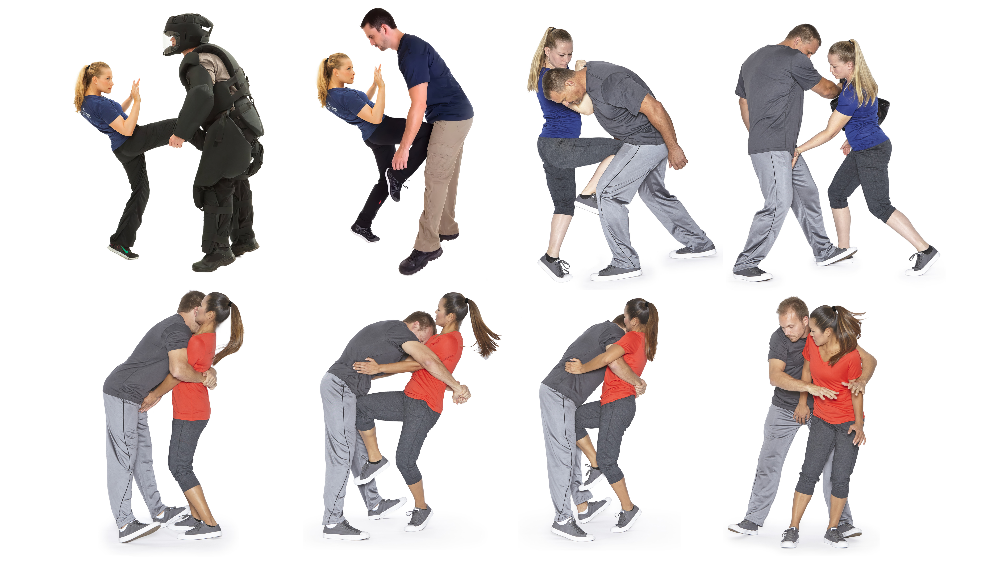
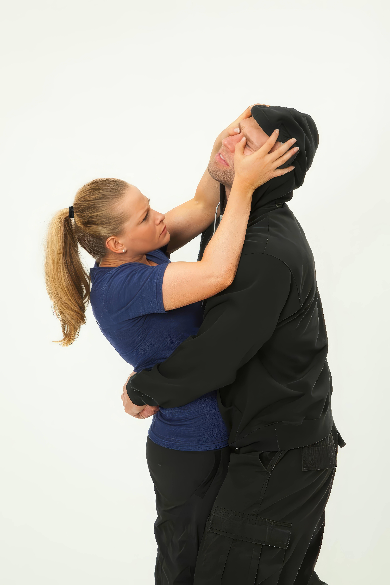

Basic Self-Defense
Techniques for Women
Featuring Jarrett
Arthur
Techniques for Women
Featuring Jarrett
Arthur


Figure 1: A portrait of Self-Defense Expert Jarrett Arthur. She is smiling and her blonde hair is neatly tied back in a ponytail.
Self Defense expert Jarrett Arthur (founder of M.A.M.A - Mothers Against Malicious Acts, founder of Jarrett Arthur Customized Self-Defense and co-founder of Jarrett and Jennie Self-Defense), shared some incredibly useful information regarding prevention. Afterall, fighting is the last resort.
“Learning self-defense will make you fearful of life and paranoid.” FALSE. Completely, absolutely, and unequivocally false. While that’s a common misconception held by women, the reality is that learning how to defend yourself, and learning how to exist in the world in a safer way, leads to feeling less fearful. You have the confidence and knowledge to take care of yourself when the shit hits the fan.
I think of self-defense as a spectrum consisting of 3 distinct categories: pre-fight (awareness, avoidance, prevention, de-escalation), fight (movement, striking, blocking, defending), and post-fight (legal, psychological, emotional). By far, the most important category is pre-fight. If you can avoid being in a physical fight for your life that’s what you want to do, by any means necessary.

Women often face a size and strength disadvantage against men. To level the playing field more, women must take any advantage they can get.
Balls. Testicles. Nuts. Family Jewels. Nards. Cojones. Huevos. Ok, now that I have your attention, you can probably guess what we are about to discuss. It doesn’t matter what slang or anatomical name you choose to call it, a man’s balls presents a significant weakness that can be exploited in self-defense. Intentional strikes to the groin are against the rules in every single competitive sport on the planet, and for good reason. But it’s the actions that are against the rules in sport, that should be considered best practices for the street.
While it is possible to do permanent damage if you deliver a solid kick to the groin, the reality is that men get accidentally hit in the balls all the time without suffering permanent damage. Moreover, it should not be the intention of the defender to permanently damage the groin, but instead to deliver an aggressive, powerful kick to the groin that inflicts enough pain to stop, stun, or slow an attacker long enough to allow for time to escape.
If your attacker can't see you, he can't attack you. Attacks to the eyes hurt a lot and can provide ample time for escape.

Figure 1: Self-Defense Expert Jarrett Arthur demonstrates a highly practical self-defense oriented fighting stance.
To set up a strong ready stance for self-defense, stand with your strong leg stepped back to give yourself a solid base. Keep a slight bend in your knees and stay on the ball of your back foot so you can react, move, or strike quickly. Bring your hands up to shield your face with your palms facing out, tucking your chin and lifting your shoulders slightly to protect your neck and jaw.
This posture keeps you balanced on your feet, helps you generate power behind strikes, and leaves you in a clear position to create distance or run away.

Figure 1: Self-Defense Expert Jarrett Arthur delivers a front kick to an attacker's groin.
The front kick to the groin is the longest ranged attack you can deliver and it's also one of the most effective. Here's Self-Defense Expert Jarrett Arthur's walk through on how to preform this move. Fun fact: Front kick to the groin is Jarrett Arthur's favorite technique.

Figure 1: Self Defense Expert Jarrett Arthur knees an attacker in the balls.
Jarrett Arthur breaks down how to perform a knee strike through the following key mechanics and guidelines:

Figure 1: Self-Defense Expert Jarrett Arthur demonstrates a front-bear hug escape by attacking the eyes of the assailant.
If your attacker can't see you, then he can't attack you. This is why eye strikes work so well. Self-Defense Expert Jarrett Arthur explains how to deliver an eye-strike.
The most effective way to strike to the eyes is by connecting your fingers and your thumbs together to make a really strong point from here I could send one or the other or I could send both strikes right to the eyes. If you are really close to him, you can also stick your thumbs into his eyes.
Jarrett Arthur is one of the highest ranking female black instructors in Krav Maga in the country. For over 10 years she’s been educating and instructing men, women, and kids about the importance of practical, effective self-defense and personal safety knowledge. In 2009 she founded M.A.M.A. (Mothers Against Malicious Acts), a self-defense system designed exclusively for moms and all people responsible for the wellbeing of children. Jarrett has been featured as an expert on national television shows including Good Morning America, Ellen, Access Hollywood KCAL9, and Good Day LA, as well as in numerous online and print publications including SHAPE, Parents, Livestrong, Fitness Magazine and The New York Times.
These techniques are demonstrated by Self-Defense Expert and Krav Maga Black Belt Jarrett Arthur (founder of M.A.M.A - Mothers Against Malicious Acts, founder of Jarrett Arthur Customized Self-Defense and co-founder of Jarrett and Jennie Self-Defense).